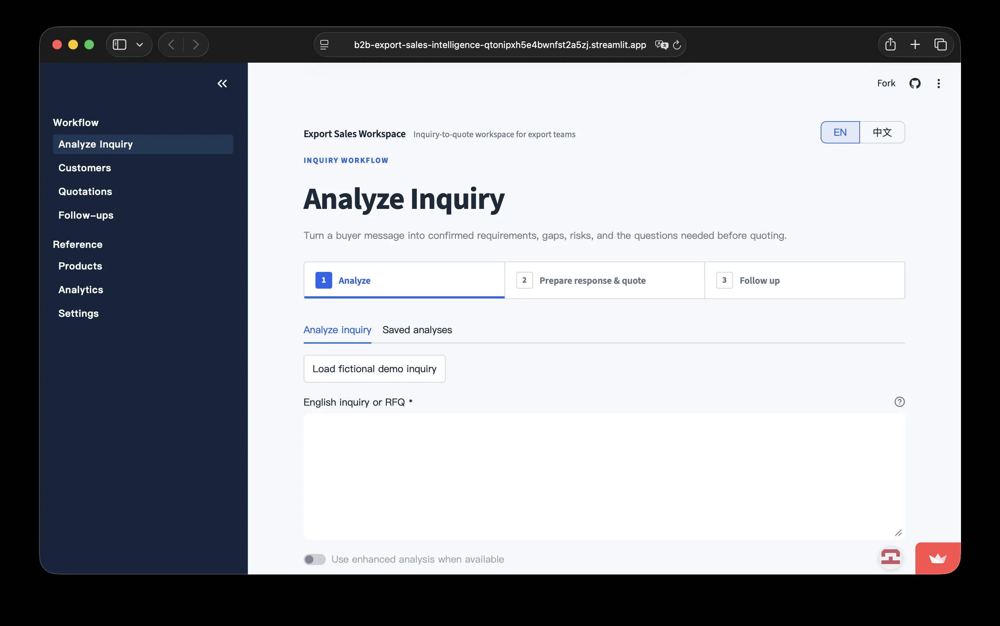

Live product interfaceSales operations · Decision support
B2B Export Sales Intelligence
A bilingual, local-first workspace that turns fragmented export inquiries into traceable customer, quotation, and follow-up decisions.
- Problem
- RFQs, quotes, and follow-ups are split across inboxes, spreadsheets, and memory.
- System
- Analyze Inquiry → Customer → Quotation → Follow-up → Analytics.
- Evidence
- EXW / FOB / CIF / DDP, Gross Margin vs Markup, bilingual UI, Excel I/O.
4 trade terms
2 interface languages
Local-first SQLite workflow
PythonStreamlitSQLitePandasPlotlypytest
More about the workflow
The tested quotation engine handles exchange rates and cost logic while persisted links keep each inquiry connected to its customer, matched product, quote, tasks, and activity timeline. Optional AI-assisted analysis enhances a core workflow that also runs without an API key.